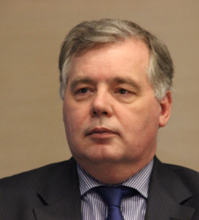
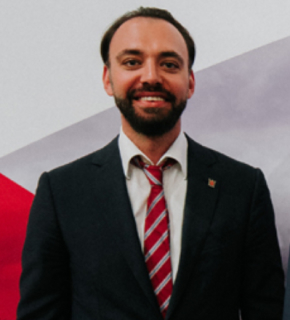
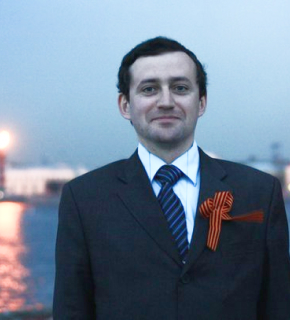
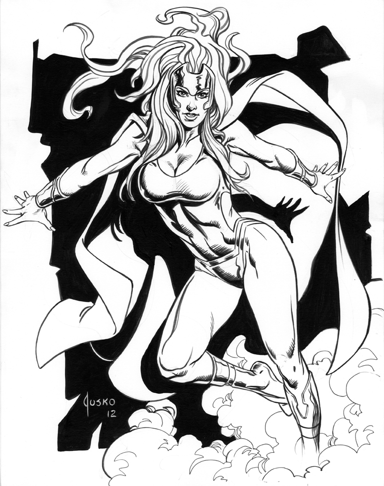

Григорьев Евгений ДмитриевичПредседатель Комитета по внешним связям Санкт-Петербурга

Марков Сергей ЛеонидовичПервый заместитель председателя Комитета по внешним связям Санкт-Петербурга

Ганин Александр АлександровичНачальник Отдела по связям с соотечественниками за рубежом

Соболевский Андрей ЛеонидовичГлавный специалист Отдела по связям с соотечественниками за рубежом
Ильинская Дарья РомановнаВедущий специалист Отдела по связям с соотечественниками за рубежом

Борисова Марианна ОлеговнаВедущий специалист Отдела по связям с соотечественниками за рубежом